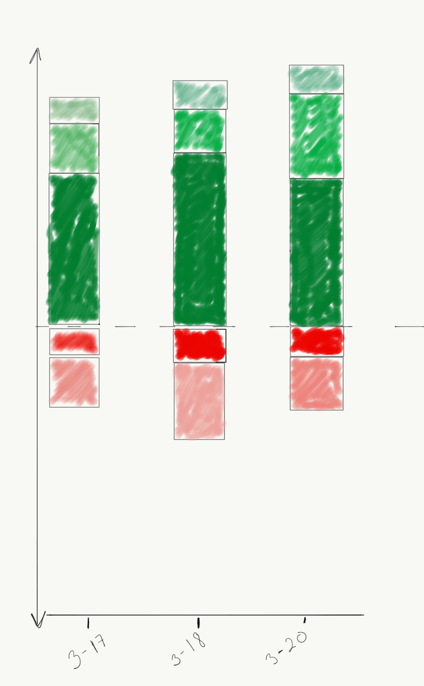

Creating stacked bars with diverging color and offsets with D3.js
Note: This blog contains a test case with some stock information. It is not meant to be taken in any way as financial advice. End Note
TL;DR: You can view the all the files and visualization on this site.
<A couple of weeks ago, I decided that I needed to invest in retooling some items in my web-development toolkit. So, given my background in data analysis, I had the all-important "Wouldn't it be cool if..." moment and came across D3js.org. I was hooked! I wanted to learn more!
Personally, I tend to get a lot of value in learning through a structured environment, especially if you have, or want to, get over a massive learning curve quickly. If you are so inclined, I recommend taking Ray Villalobos' Data Visualization with D3.js course on Lynda.com. Ray also has a bunch of other courses on JavaScript and Apps. He is truly a pro! And given his course offerings, a very generous web developer.
Why D3.js?
D3.js is a JavaScript library built for manipulating web documents based on data. The primary way to create charts and graphs is through scalable vector graphics (SVG). So, if you want a beautiful visualization that is above and beyond anything out in the market, this library is for you.
There are some prerequisites, however. First, take a little mini-course on JavaScript. I recommend W3CSchool's JavaSript course. I took it just before the D3 lessons in order to get a "good enough" handle on the language and the document object model (DOM) of HTML.
Stock portfolio analysis
Hey, Gen-X,Y,Z'ers and Millennials! Yeah, I'm talking to you! Assuming that you have been living a life with some of the cardinal virtues (such as prudence and temperance), you have probably enough sense to have been saving for your retirement. If you have made the choice to place some of your retirement savings into a brokerage account and invested in some stocks, then one metric that you might like to keep track of is the unrealized gains or losses of your stock portfolio.
Unrealized what?
Let's say that you by stocks A,B,C for price of $10, $20, $30 at quantities of 10,10,20 shares, respectively. Over time, the value of the stock will change in value according to their business performance and the overall confidence of investors. Let's say that the next day, stocks A and B increase by 5% and stock C drops by 2%. The prices for these three stocks, therefore, are $10.20, $21.00, and $29.40 for stocks A,B, and C. So, the values of each of the stocks equal $102, $210, and $588. The original value of your investment is $100, $200, and $600. When we compare the current value, we gained $2 from A and $10 from B, but lost $12 from C (yikes!). These numbers constitute the specific unrealized gains and losses. Let's say that instead of having invested in 3 stocks, we invested in 20. See the challenge? And also, what if I wanted to see what the value of this portfolio looks like as a function of time?
Breaking down the problem, visually
Alright, so let's say that I wanted to see the results of the stock moves in such a way that I could get a visual cue of what my gains and losses were for all of my stocks. I would need to compute the individual unrealized gains/losses, and stack them on top of each other. The losses, would go below the $0 mark on the y-axis, and the gains would go above. I would also like to get specific information about each of the stacked elements, such as their stock key and the specific unrealized gain/loss for that stock in my portfolio. You can do this with a tooltip that pops up when you hover the mouse over each section of the bar.
Preparing the data file (JSON)
In order to get historical stock quotes, I use a Python script with the yahoo-finance module provided here. You can install it by running this command:
~$ pip install yahoo-finance
You can use the "Share" class from the module to call the get_historical() function with date range arguments to get information such as the opening and closing prices, the high and low values, etc.
>>> from yahoo_finance import Share
>>> Share("FB").get_historical("2017-03-14","2017-03-16")
[{'Close': '139.990005', 'Low': '139.729996', 'High': '140.25', 'Volume': '13594000', 'Open': '140.199997', 'Symbol': 'FB', 'Date': '2017-03-16', 'Adj_Close': '139.990005'}, {'Close': '139.720001', 'Low': '138.490005', 'High': '140.100006', 'Volume': '19299100', 'Open': '139.289993', 'Symbol': 'FB', 'Date': '2017-03-15', 'Adj_Close': '139.720001'}, {'Close': '139.320007', 'Low': '138.520004', 'High': '139.460007', 'Volume': '12928400', 'Open': '139.460007', 'Symbol': 'FB', 'Date': '2017-03-14', 'Adj_Close': '139.320007'}]
The results are returned as a list of dictionaries. Each item in the list corresponds to each market day (Monday through Friday, except other holidays. I extracted the details for each of these stocks closing prices, multiplied them by the number of stocks in the portfolio, and subtracted the initial value from the value in each day. This returns the unrealized gains and losses. Then, for each day, I sorted the order of the results from high to low. I also added an offset that is needed in order to position the location of the stacks. These are done with the following code snippet in Python:
def offset_list(ldf):
offset = 0
offsetlist = []
fneg=True
for items in ldf:
if fneg:
if items>0:
offsetlist.append(offset)
offset=np.abs(offset)+np.abs(items)
else:
offset=0
offsetlist.append(offset)
offset=np.abs(offset)+np.abs(items)
fneg=False
else:
offsetlist.append(offset)
offset=np.abs(offset)+np.abs(items)
return offsetlist
Bl.ocks
You can take a look at the results of my work here. The site has additional files to help render the visualization.
I added the transition of each bar in order to give a dimension of "function of time." You can see how this layout helps to get quick information about the overall health of this portfolio. For example, the highest positive valued stock sits just below all the others, giving and impression that this stock value is the foundation. The largest negative valued stock loss is shown at the bottom, providing a viewer with the most accessible loser, suggesting that some adjustments may need to be made.
Final thoughts
Let me know what you think! Would this type of layout be useful to you? Feel free to contact me through twitter through @paulgarias and continue the conversation here!